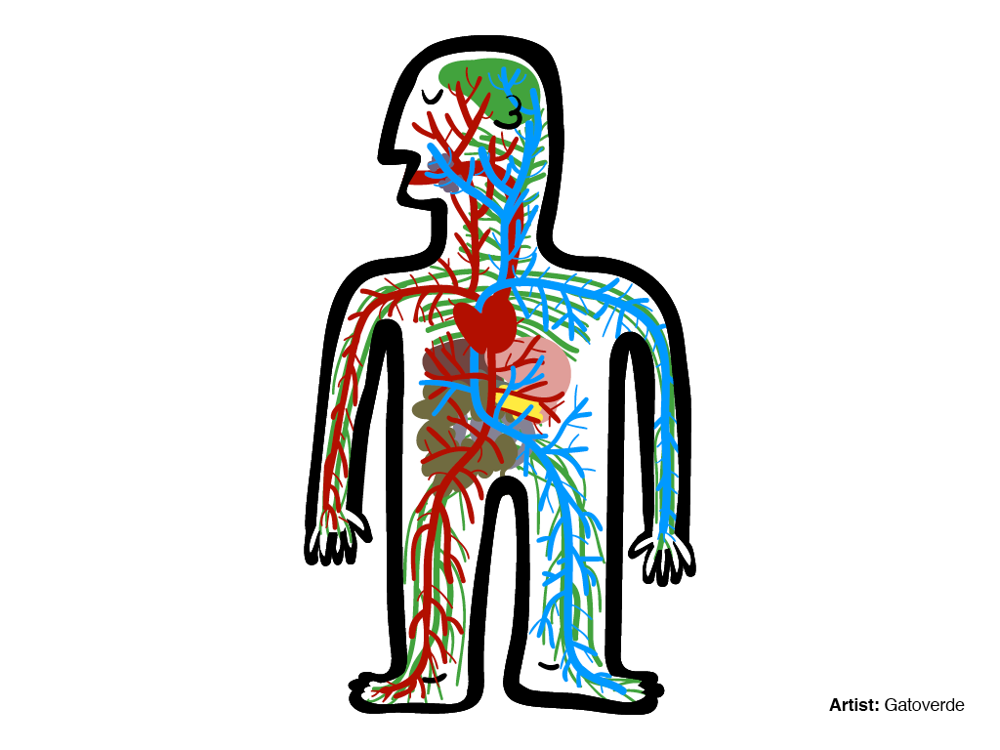
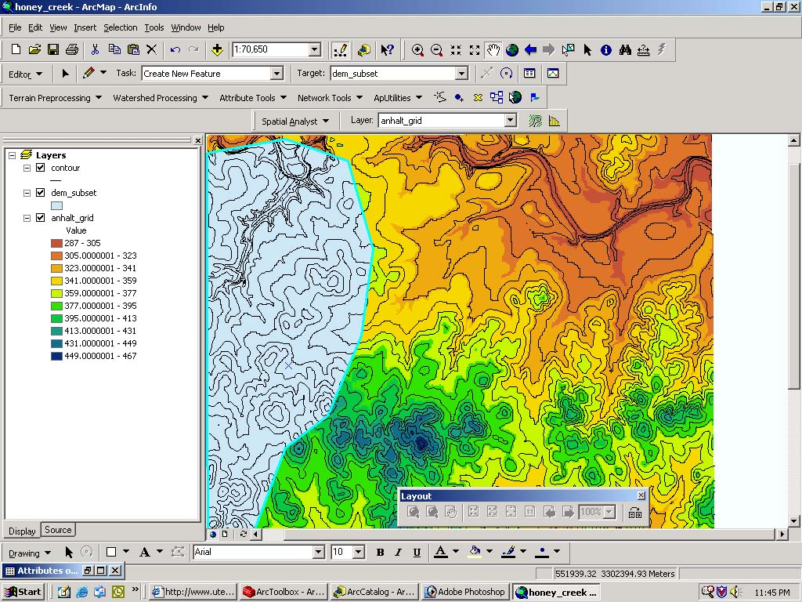
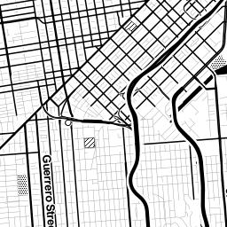
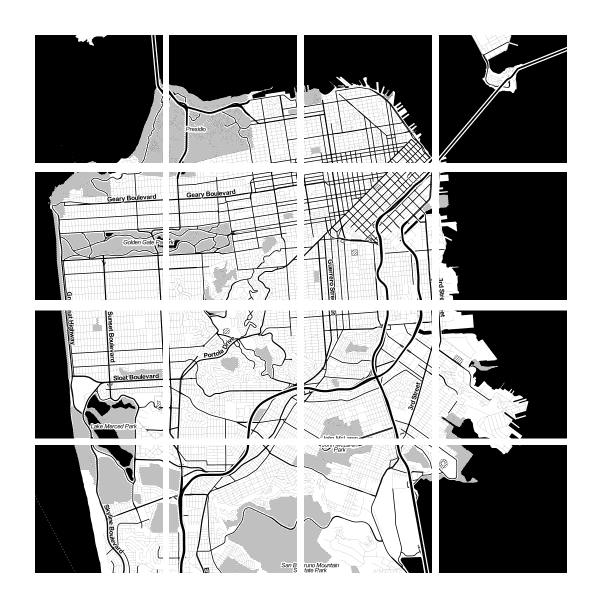
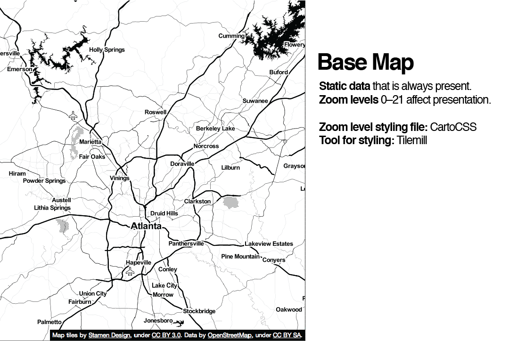
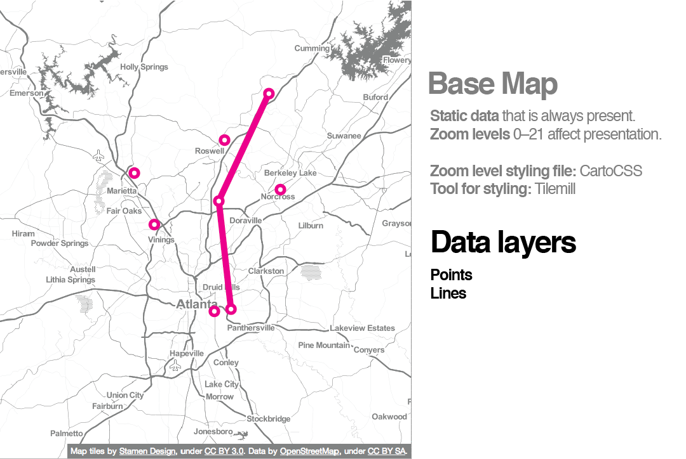
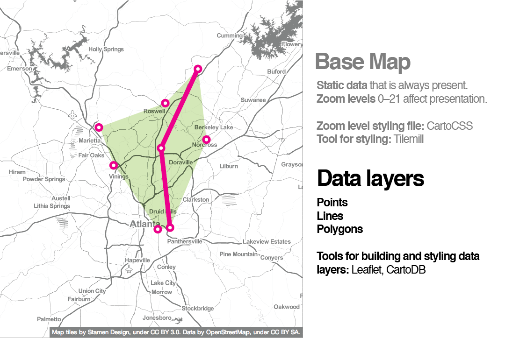
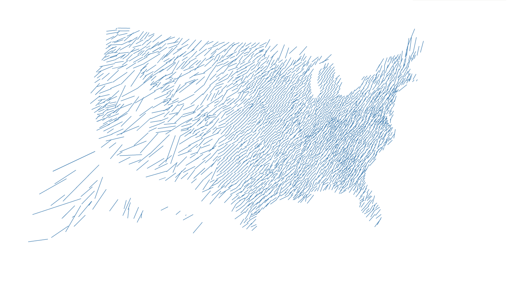
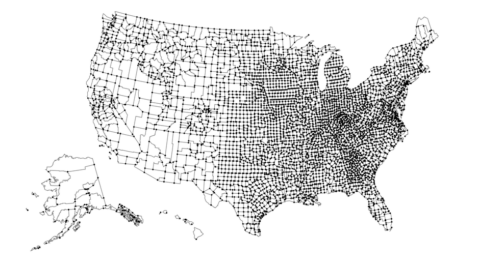

Anatomy of a Web Map
Housekeeping!
You can follow along here:
sta.mn/qhg. Links are in blue boxes,
green is just emphasis. You can comment and edit on
github!Now let's get started :)
Today we will be talking about the very most basic principles of web mapping.
We're including a little history, so you can get an idea of how web maps have come to be.
There are always exceptions! We'll talk about those too.
We'll talk a lot about Google, but we're going to show you a 100% open source Google-free stack
But first, what does anatomy have to do with a web map?
Well,
Both bodies and web maps have components and systems that interact and intertwine.

Instead of cells, maps have data.
Instead of circulatory and digestive systems, web maps have styles and tiles and servers.
oh my!
So,
What is a web map?
To answer that question, maybe it's more helpful to ask,
How is a web map different than a digital map?
Digital: involves a computer, but might not be accessible by the internet.
A web map is a kind of digital map. And both are obviously quite different from analog maps, such as paper maps and atlases!
We're talking about web maps that you view in a browser, like...

Making maps for
mobile devices can be similar, but we're not talking about that today.

We're also not talking about
digital globes like
Google Earthok ok
but how about a little history:
How did web maps come to be?
First, there were digital maps like
ArcGIS.
Although useful, GIS for the Web is not user friendly :(

In 1996, Mapquest launched its web service.
ta da!
Directions! Online! Revolutionary!
The problem: it was slow to load :(
MapQuest required a full page refresh to scroll or zoom, and was always aligned to tile boundaries.
Google Maps really paved the way for online mapping, beginning in 2005.
But what was the revolution?
Was it the interface?
The red marker?
The weather widget?
No!
It was the tile. 
Let's talk about tiles for a minute. And to do so, we're borrowing some info from amazing mapper
Lyzi Diamond, who got a bunch of info about tiles from
Mapbox.
Thanks y'all! <3 <3 <3
Now here goes...
All tiles
=
same size! 256x256 pixels
same boundaries

Tiles could be a road map, a satellite image, or anything else that's a raster!

All these little tiles load
way faster than one big map.
Web maps like this load the tiles that are on your screen. If the map is “smart,” it will pre-load tiles outside of the screen, along the top, bottom, left, and right.

This kind of map is colloquially called a
slippy mapEach zoom level has its own set of tiles!
 Zoom level 0: one tile for the world.
Zoom level 0: one tile for the world.With each additional zoom level, the number of tiles increases exponentially.
 Zoom level 1: 4 tiles for the world.
Zoom level 1: 4 tiles for the world. Zoom level 2, 3, 4, 5
Zoom level 2, 3, 4, 5Zoom level 13
Tiles are rendered in advance (usually) then stored in a cache
Map tiles are just images on the web, so you can link to them individually.
In order to understand how this works, let's break down the URL.
http://tile.openstreetmap.org/4/2/6.png -- this is the name of the tile server.
http://tile.openstreetmap.org/4/2/6.png -- this is the z value, or the zoom level.
http://tile.openstreetmap.org/4/2/6.png -- This is the x/y value, or the place in the grid where the tile lives.
Google maps use Mercator projection, which is designed for sailors BUT it works well for flat maps.
We'll see more map projections later...!
Anyway, so all other slippy maps and slippy map software followed Google's lead, with tiles at the base.
Not surprisingly, a collection of raster tiles makes up what we call the map's base layer.
When we layer things like markers on top of them, we call those data layers or content layers or feature layers.
*(Not every web map contains a feature layer, but they are fairly typical.)
They are often vector layers (point, line, polygon). Sometimes you can interact with them (clicking to produce a popup, for example).
Filetypes: GIS uses
shapefiles, but web maps prefer
KML, or more recently,
GeoJSONHere's the breakdown of how these pieces fit together:



Make sense?
Great!
Now we're ready to dive a little deeper into the whole web map anatomy!
What does the javascript library do? Grabs the tiles, adds content layer, handles interaction.
3 exceptions to the simplified story!
Exception #1: Tiles are always rasters EXCEPT when they're not!
vector tiles: they are an alternative to a database that makes raster tiles. They still render to rasters for display
Raster: ask for data to fit into tile
Vector: already have vector data sliced up in the way that I will make raster tiles
So someone has to go through and chop up that data, like
MapBoxException #2: Can’t interact with features on a raster. BUT
UTFGrid (Mapbox invention) makes it possible.

UTFGrid is an invisble tile layer made up of arbitrary letters which are indexes into the clickable data
Exception #3:
D3 exists outside the world of tiles
you can’t easily make road map in D3 BUT can do things that are clumsy in slippy maps like...

different map projections (in the browser!)
sta.mn/jfsD3

IS
IN

SANE
Very powerful, but steep learning curve
So.
Where do I start?
Do I need to make my own custom tiles?
Yes? Use
TileMill to design your own tiles.
 Pretty!
Pretty!Style your map with
CartoCSS (or just carto)
You can host these files on
MapBox, or...
Do I need a content layer?
No? Put all your data into the tiles, possibly using UTFGrid for interactivity
Yes? Convert a Shapefile to GeoJSON with
OGRE or write your own GeoJSON with
geojson.ioFinally,
CartoDB takes care of almost all of this for you!
Thanks to:
You!
Presentation made with
big


 The simplest possible web map: sta.mn/v5h
The simplest possible web map: sta.mn/v5h

 vector tiles! What are they? (unrelated demo)
vector tiles! What are they? (unrelated demo)


{kind=link}